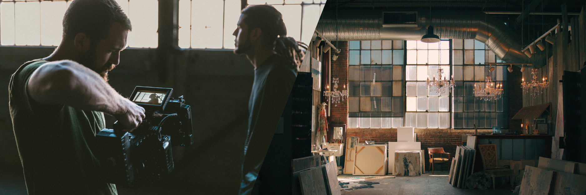

Norcopia Pictures
Norcorpia Pictures är ett filmbolag baserat i Norrköping som har producerat nya och spännande spelfilmer under de senaste åtta åren. De inspireras mycket av Sveriges mytologi och historia när det tar fram sina filmer och det märks som tydligast i deras debutfilm ”Vildvittrorna”. Filmbolaget grundades av Erik Marklund och Sebastian Sjöstedt efter att de både gått ut Stockholms Filmskola 2015 i Bromma. Deras största ambition är att producera spelfilmer, men de har också gjort reklamfilmer åt bl.a. Naturkompaniet, ICA och IKEA.
Att börja från botten
Passionen har funnits där sedan länge och de har båda skapat flera kortfilmer både före och under sin tid på universitet. Tillsammans kickstartade de drömmen om ett eget filmbolag i Norrköping där de kan berätta historier med Sverige som backdrop till sina kreativa idéer och tankar. Det har varit en tuff väg uppåt inom filmbranschen med många olika typer av utmaningar som dykt upp under resans gång. Marklund och Sjöstedt har lärt sig otroligt mycket och deras skaparglädjes har bara ökat med varje ny utmaning de har överkommit och har nu nått nationell igenkänning. ”Getmans Rike” är deras tredje spelfilm sedan Norcorpia grundades den 13 oktober 2016 och bygger på många liknade idéer de hade när de skapade sin debutfilm. För en trogen tittare kanske de kan hitta samband mellan de två filmerna?
